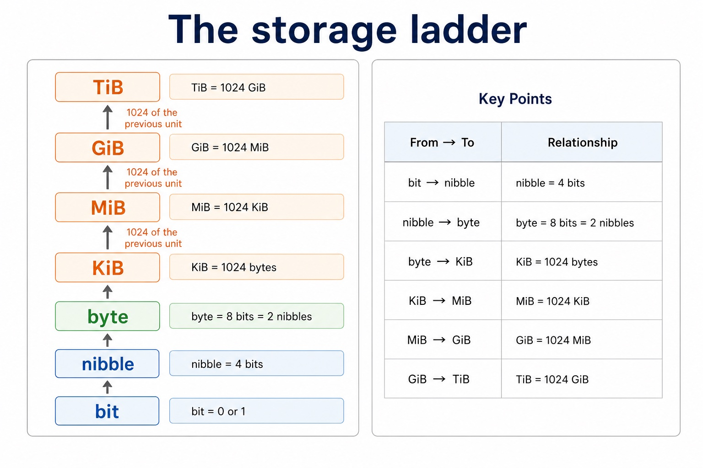

Binary and decimal prefixes use different scales
Visual overview
The storage ladder

Visual transcript
- bit 0 or 1
- nibble 4 bits
- byte 8 bits = 2 nibbles
- KiB 1024 bytes
- MiB 1024 KiB
- GiB 1024 MiB
- TiB 1024 GiB
Core explanation
Binary prefixes use powers of 1024: kibi (Ki) means 2^10, mebi (Mi) means 2^20, gibi (Gi) means 2^30 and tebi (Ti) means 2^40. Therefore 1 KiB = 1024 bytes, 1 MiB = 2^20 bytes, 1 GiB = 2^30 bytes and 1 TiB = 2^40 bytes.
Decimal prefixes use powers of 1000: kilo (k) means 10^3, mega (M) means 10^6, giga (G) means 10^9 and tera (T) means 10^12. Therefore 1 kB = 1000 bytes, 1 MB = 10^6 bytes, 1 GB = 10^9 bytes and 1 TB = 10^12 bytes. Case and the i in KiB/MiB/GiB/TiB carry meaning.
Binary prefixes climb by 1024; decimal prefixes climb by 1000.
A binary staircase has 1024 steps per level; a decimal staircase has 1000. The labels tell you which staircase to climb.
Worked example · Express one file in bytes, MB and MiB
- Start with binary units
A 4 MiB file contains 4 × 1,048,576 = 4,194,304 bytes.
- Use a decimal divisor
4,194,304 / 1,000,000 = 4.194304 MB.
- Check the meaning
4 MiB and 4.194304 MB describe the same byte count; the file has not changed.